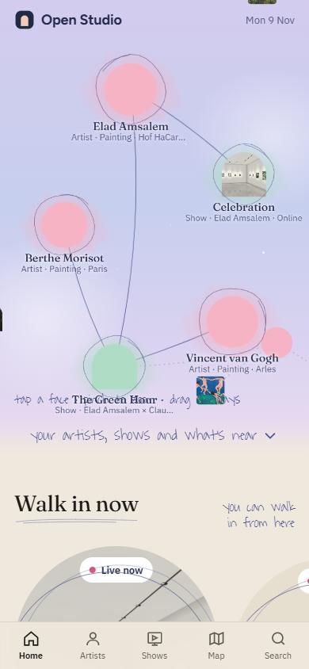
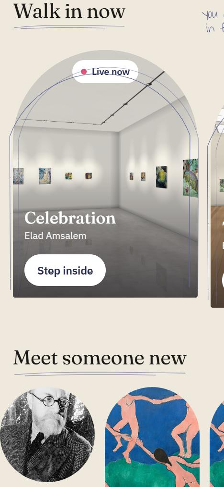
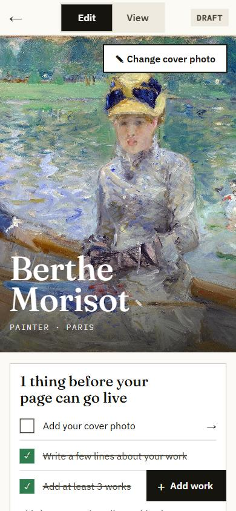
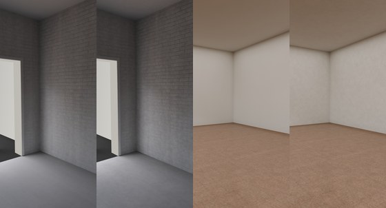

| מה | מה נעשה | פתוח |
|---|---|---|
| דף הבית | גלילה למטה מעל הכוכבים מורידה בעמוד; זום רק בשתי אצבעות. בלי +/− ובלי Wander. מתחת לכוכבים Walk in now: שורת תערוכות שגוללים הצידה, ואחריה Meet someone new. מעכשיו המראה נעול. | לנסות גלילה באצבע באייפון; כרגע 3 תערוכות בשורה |
| עמוד האמן | התערוכות מוצגות באותה שורת קשתות כמו בדף הבית. 5 עבודות אחרונות ואז "עוד"; השאר לפי סוג ובתוכו לפי שנים. | לאשר: סדר לפי סוג ושנה |
| עריכת הסטודיו | בלי תמונת פרופיל: מחליפים את תמונת הפתיחה בנגיעה וגוררים למיקום. רקע בהיר, גופן גדול, כפתורים גדולים. כפתור אחד "+ Add work". בתחתית עריכת תערוכה: A walk-through tour עם הסבר; התמונות שם רק לסיור. | לא נבדק מול חשבון אמיתי |
| החללים | האבחנה: הקירות והחלונות נשמרו ברזולוציה נמוכה מאוד והטלפון מגדיל אותם פי 4–9. עכשיו: פי 2–3 חדות, כל חלון מצולם בנפרד בחדות גבוהה, טקסטורה עדינה בקירות. הליכה מהירה יותר (1.9 מטר לשנייה). תוכנית לשבועות ב-rooms-plan.md. | הבנייה המחודשת עוד רצה בשרת; כמה חדרים: בתוכנית |
| שקופיות פתיחה | שני קובצי PDF: לאמנים ולאוהבי אמנות. ארבעה כיווני עיצוב, תסריט של 6 מסכים, ואיך זה מתחבר לאפליקציה. | לבחור כיוון; לעבור על הטקסטים |
| צבעי רקע | שש סכמות על מסכים אמיתיים. המלצה: נייר חם כבסיס, קקאו כהה רק לערב, גרגר נייר עדין. | לבחור |
| לוח בקרה למחשב | אפליקציה נפרדת: eladamsalem.com/open-studio-desk/ (לנסות: ?guest). תור החלטות, אמנים חדשים, אנשים, מערכת, ועורך כתבות למוזיאון בתוך חלל. | כניסה בקוד מהמייל; הקישור במייל דורש את אישורך |



